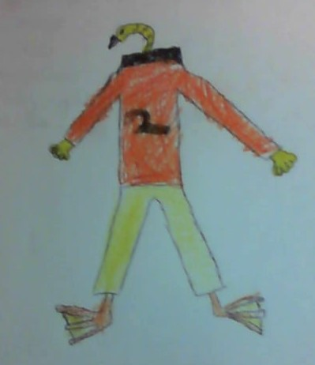
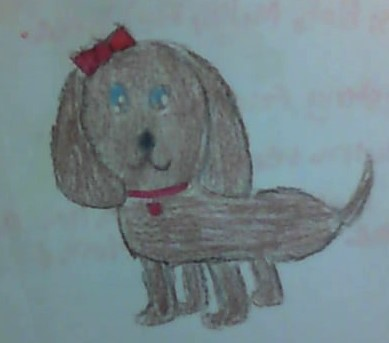

Ducky
Info about Pilot Ducky

- His age is 27.
- He is the worlds best pilot.
- He is 6' 4".
- He is very funny and super awesome.
- He is very rich.
- his favorite food is noodles.
Fluffy
Fluffy's Mission

Fluffy was a dog that lived on Iceland'd beach.
She was born in Australia from two Labador Retreievers.
She ran away to Iceland because she had a life long dream to marry a penguin.
She swam away to Iceland and married a penguin!
They had minions! They were named Kevin, Stuart, and Bob!